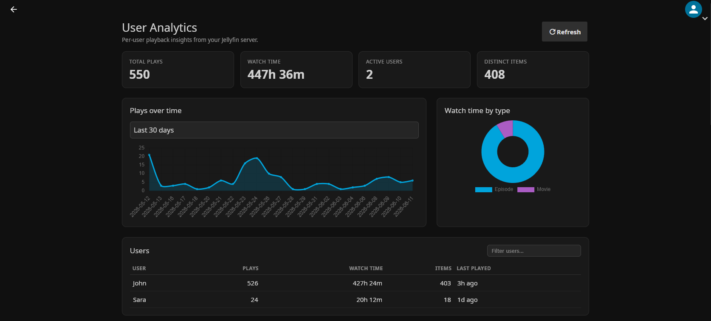
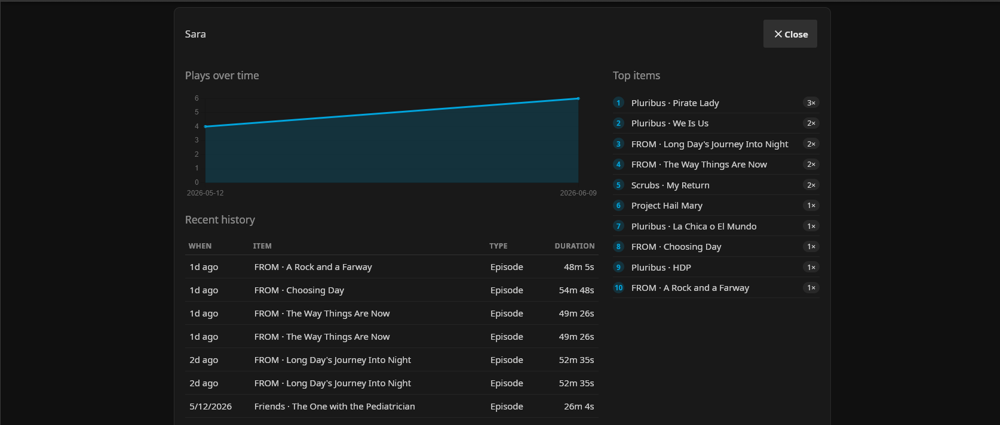
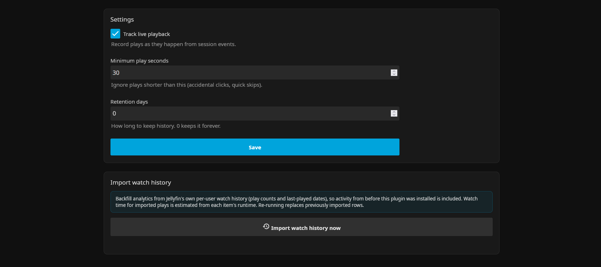

A Jellyfin plugin that turns playback into per-user analytics — play history, play counts, watch time and charts — in a clean admin dashboard.



Built on Jellyfin's own session events — accurate, structured, and admin-only.
Play count, total watch time, distinct items and last-played for every user, with a click-through drilldown.
Plays over time, watch time by media type, and per-user trends — summary KPI cards at a glance.
A paged, searchable history of what was watched, when, on which client — and each user's top items.
Measured as real wall-clock time per session and de-duplicated, so skipping to the end never inflates totals.
Import Jellyfin's existing per-user watch history so activity from before you installed the plugin counts too.
Every metric is available as JSON under /UserAnalytics for your own dashboards and automations.
Add the repository once and install (plus future updates) straight from Jellyfin's catalog.
https://raw.githubusercontent.com/JTCozart/jellyfin-analytics/master/manifest.json